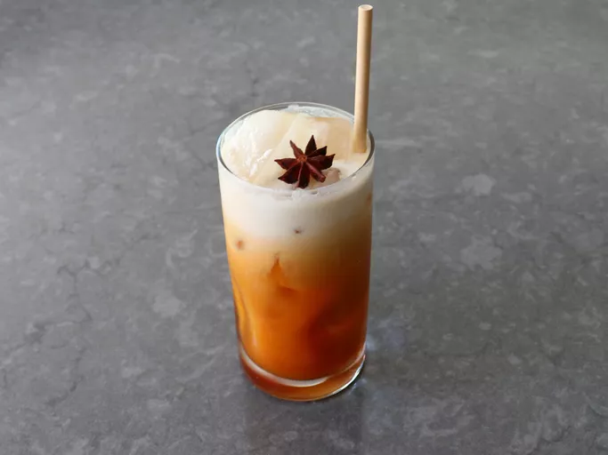

Thai Spice Sweet Tea

Description
This Thai spice sweet tea is lighter, more refreshing, and less sweet than
traditional Thai iced tea. Red rooibos and black tea steep with cardamom,
star anise, cloves, and cinnamon. Topped with coconut milk, there's no
better drink to serve with spicy food.
Ingredients
- 4 1/4 cups water
- 4 cardamom pods
- 3 whole star anise
- 3 whole cloves
- 1/8 teaspoon ground cinnamon
- 1/2 teaspoon tamarind paste (optional)
- 1/3 cup white sugar, or to taste
- 5 bags rooibos tea
- 2 bags black tea
- 3/4 cup coconut milk, blended smooth
Steps
- Add water to a saucepan, and place over medium-high heat.
-
Crush cardamom pods with mortar and pestle or flat of a knife. Add
cardamom, star anise, cloves, cinnamon, and tamarind to the saucepan,
and bring to a simmer. Reduce heat to low and simmer for 5 minutes.
-
Add tea bags; stir to combine. As soon as water returns to a simmer,
turn off heat, and steep for 5 minutes.
-
Stir in sugar, and let stand 5 minutes more. Strain into a container,
squeezing tea bags thoroughly. Wrap container and refrigerate until very
cold, about 1 hour.
-
To serve, fill a tall glass with ice. Pour in tea; top with a generous
splash of coconut milk.